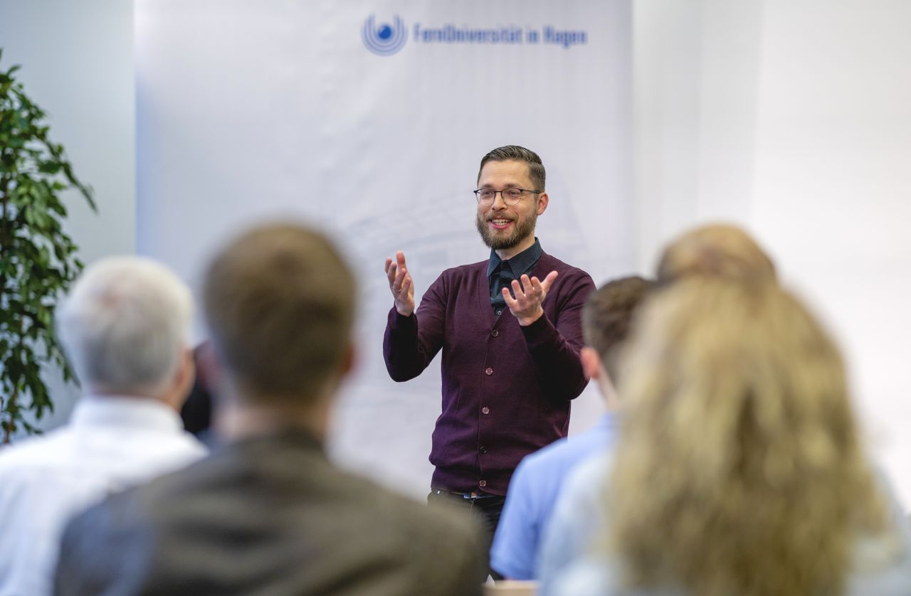

Home
Current projects
Publications
Presentations
Teaching
Conferences
Conference of the Society of Labor Economists (SOLE), 2022.
Jahrestagung des Vereins für Socialpolitik, 2019, 2020.
Conference of the European Association of Labour Economists (EALE), 2019, 2021, 2022.
Conference of the European Society for Population Economics (ESPE), 2022, 2023.
Colloquium on Personnel Economics (COPE), 2022, 2023.
Conference of the European Association for Research in Industrial Economics (EARIE), 2018.
Conference of the European Sport Economics Association (ESEA), 2017, 2021, 2022, 2023.
International Conference on Cultural Economics (ACEI), 2016, 2021.
European Workshop on Applied Cultural Economics (EWACE), 2017, 2019.
International Conference on Arts and Cultural Management (AIMAC), 2019.
Annual Conference “Contests: Theory and Evidence”, Norwich, 2018.
International Conference on Sport Economics and Sport Management (SESM), 2017, 2018, 2019, 2023.
Vienna Music Business Research Days, 2016.
Invited talks
IAAEU Trier, "Ökonomisches Kolloquium", 2023.
Digital Europe Economic (DEE) Seminars, online, 2022.
Reading Online Sport Economics Seminars (ROSES), online , 2021.
Texas A&M University and Akademie für internationale Bildung (AiB), Bonn, 2021.
IZA Brown Bag Seminar, Bonn, 2019.
Seminar at Bielefeld University, Department of Sports Science, 2017.
Bamberg Economic Research Group (BERG), "Forschungsseminar VWL", 2017.

Image: FernUniversität Hagen